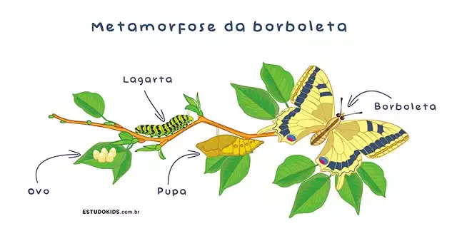

Sobre as borboletas
O Ciclo da Vida
A transformação ocorre em quatro fases: a do ovo, da larva, da pupa e o estágio adulto. O ciclo começa com os ovos, postos pela borboleta geralmente em folhas de planta. Esse período dura de alguns dias até um mês.O tempo de vida da borboleta adulta pode chegar a mais de 3 meses.
